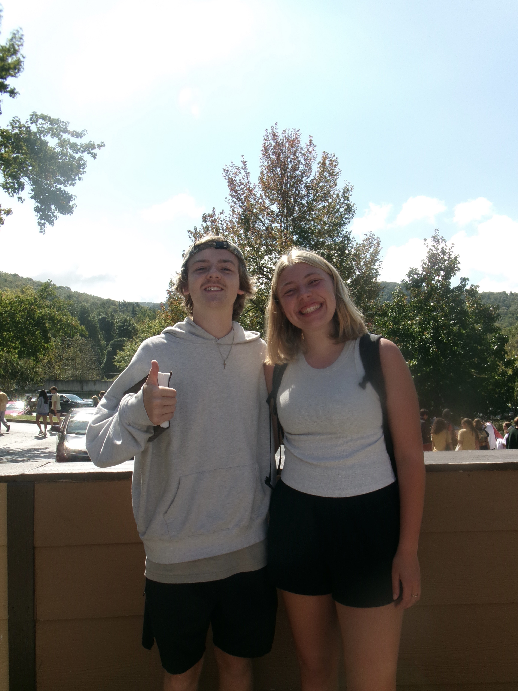

STUDENT
Testimonials
Hear why students love TNW!
Christian Yen (Sophomore)

TNW has had a huge impact on my college experience. It has been a wonderful break throughout the week where I know I can rest and spend some time with God. Tuesday nights I know I’ll get to see a lot of my friends that I don’t usually see throughout the week because we’re a part of different campus ministries.
Mckinley Tate (Senior)
TNW has impacted me so much during my time at Carolina because it gave me a space where I could stop thinking about the craziness of school and hard situations and drama and just sit and be with Jesus and get to worship him. it is so valuable to me to have a space where i can stop in the middle of the week to simply worship my beautiful Savior alongside other believers. I always leave TNW feeling encouraged, excited, and ready to continue on in the week, because I know who is with me, sustains me, and is the source of all my joy!!
David Parisher (Alumni)
TNW was one of my favorite weekly events to attend while at UNC. I haven’t been at one in 5 years, but as I got out of my truck in the parking deck tonight I heard them singing above me. What a blessing to take a half an hour from work and worship with brothers and sisters on a random Tuesday!